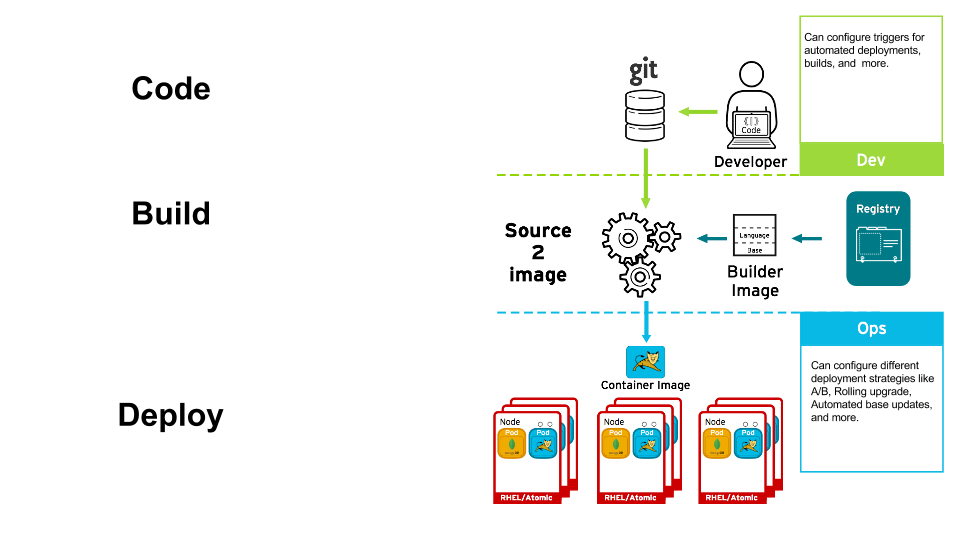
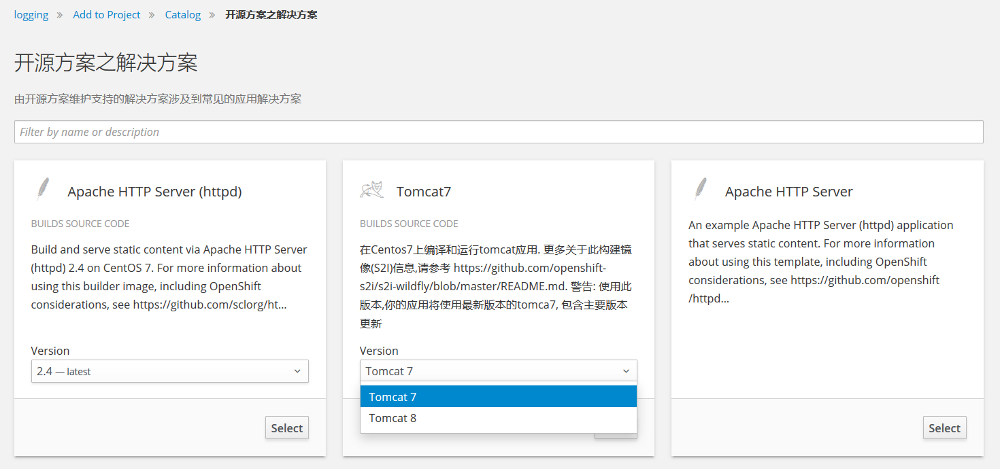
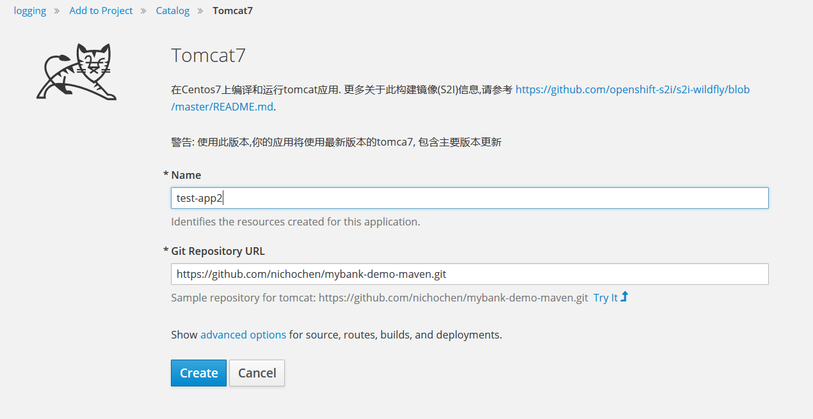
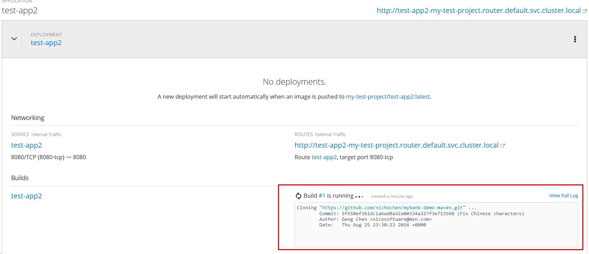
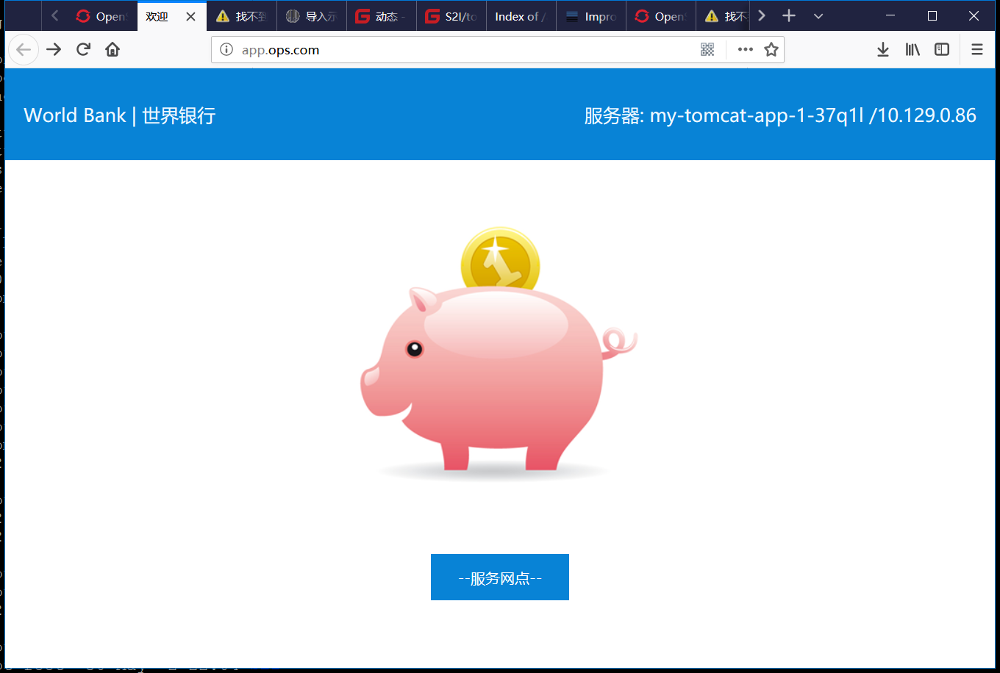

| 版本 | 日期 | 状态 | 修订人 | 摘要 |
|---|---|---|---|---|
| V1.0 | 2018-05-02 | 创建 | 开源方案 | 初始版本 |

在Master上下载S2I的二进制执行文件。
# cd /opt
# wget -c https://github.com/openshift/source-to-image/releases/download/v1.1.7/source-to-image-v1.1.7-226afa1-linux-amd64.tar.gz
解压到/usr/bin目录下
# tar zxvf source-to-image-v1.1.7-226afa1-linux-amd64.tar.gz -C /usr/bin
通过s2i create命令创建一个名为tomcat-s2i的S2I Builder镜像。 第二个参数ops-tomcat-s2i为S2I Builder镜像名称。第三个参数tomcat-s2i-catalog定义了工作目录的名称。
# s2i create ops-tomcat-s2i tomcat-s2i-catalog
执行find tomcat-s2i-catalog查看目录。
[root@openshift-master S2I]# find tomcat-s2i-catalog
tomcat-s2i-catalog
tomcat-s2i-catalog/s2i
tomcat-s2i-catalog/s2i/bin
tomcat-s2i-catalog/s2i/bin/assemble
tomcat-s2i-catalog/s2i/bin/run
tomcat-s2i-catalog/s2i/bin/usage
tomcat-s2i-catalog/s2i/bin/save-artifacts
tomcat-s2i-catalog/Dockerfile
tomcat-s2i-catalog/README.md
tomcat-s2i-catalog/test
tomcat-s2i-catalog/test/test-app
tomcat-s2i-catalog/test/test-app/index.html
tomcat-s2i-catalog/test/run
tomcat-s2i-catalog/Makefile
s2i目录下为S2I脚本
| 脚本名称 | 功能作用 |
|---|---|
| assemble | 负责源代码的编译、构建以及构建产出物的部署 |
| run | S2I流程生成的最终镜像将以这个脚本作为容器的启动命令 |
| usage | 打印帮助信息，一般作为S2I Builder镜像的启动命令 |
| save-artifacts | 为了实现增量构建，在构建过程中会执行此脚本保存中间构建产物。此脚本并不是必需的 |
编写一个制作Tomcat的S2I镜像。Dockerfile的内容如下：
# ops-tomcat-s2i
FROM openshift/base-centos7
# TODO: Put the maintainer name in the image metadata
MAINTAINER fuhua <fuhua@xinguangnet.com>
# TODO: Rename the builder environment variable to inform users about application you provide them
ENV BUILDER_VERSION 1.0
# TODO: Set labels used in OpenShift to describe the builder image
LABEL io.k8s.description="Platform for building tomcat" \
io.k8s.display-name="builder tomcat" \
io.openshift.expose-services="8080:http" \
io.openshift.tags="builder,tomcat,java,openjdk7,etc."
# Setting local yum repo
#RUN rm -fr /etc/yum.repos.d/
#ADD ./local-mirror.repo /etc/yum.repos.d/
# TODO: Install required packages here:
RUN yum install -y java-1.7.0-openjdk git wget&& yum clean all -y
# TODO (optional): Copy the builder files into /opt/app-root
# COPY ./<builder_folder>/ /opt/app-root/
# Dwonload And install Tomcat7
RUN mkdir -p /opt/app-root/ && cd /opt/app-root/ && wget http://mirrors.tuna.tsinghua.edu.cn/apache/tomcat/tomcat-7/v7.0.82/bin/apache-tomcat-7.0.82.tar.gz
RUN cd /opt/app-root/ && tar -xzvf apache-tomcat-7.0.82.tar.gz
RUN cd /opt/app-root/ && rm -fr apache-tomcat-7.0.82.tar.gz && ln -s apache-tomcat-7.0.82 tomcat7
RUN cd /opt/app-root/ && rm -fr tomcat7/webapps/*
# Download and install maven
RUN mkdir -p /opt/app-root/ && cd /opt/app-root/ && wget https://mirrors.tuna.tsinghua.edu.cn/apache/maven/maven-3/3.5.2/binaries/apache-maven-3.5.2-bin.tar.gz
RUN cd /opt/app-root/ && tar -xzvf apache-maven-3.5.2-bin.tar.gz
RUN cd /opt/app-root/ && rm -fr apache-maven-3.5.2-bin.tar.gz && ln -s apache-maven-3.5.2 maven
RUN ln -s /opt/app-root/maven/bin/mvn /usr/bin/mvn
# TODO: Copy the S2I scripts to /usr/libexec/s2i, since openshift/base-centos7 image
# sets io.openshift.s2i.scripts-url label that way, or update that label
COPY ./s2i/bin/ /usr/libexec/s2i
# TODO: Drop the root user and make the content of /opt/app-root owned by user 1001
# RUN chown -R 1001:1001 /opt/app-root
RUN chown -R 1001:0 /opt/app-root && chown -R 1001:0 $HOME && \
chmod -R ug+rw /opt/app-root
# This default user is created in the openshift/base-centos7 image
USER 1001
# TODO: Set the default port for applications built using this image
EXPOSE 8080
# TODO: Set the default CMD for the image
CMD ["/usr/libexec/s2i/usage"]
注意: 通过USER 1001定义了一个新用户，并指定该用户为容器的启动用户。以root用户作为启动用户在某些情况下存在安全风险
在脚本最末尾添加如下代码：
mvn -Dmaven.test.skip=true package
find . -type f -name '*.war'|xargs -i cp {} /opt/app-root/tomcat7/webapps/ROOT.war
mvn clean
这段代码会触发一次Maven构建，并将构建产生的WAR包拷贝到Tomcat服务器的webapps目录下进行部署。 完整的assemble脚本如下：
[root@openshift-master s2i]# cat bin/assemble
#!/bin/bash -e
#
# S2I assemble script for the 'ops-tomcat-s2i' image.
# The 'assemble' script builds your application source so that it is ready to run.
#
# For more information refer to the documentation:
# https://github.com/openshift/source-to-image/blob/master/docs/builder_image.md
#
# If the 'ops-tomcat-s2i' assemble script is executed with the '-h' flag, print the usage.
if [[ "$1" == "-h" ]]; then
exec /usr/libexec/s2i/usage
fi
# Restore artifacts from the previous build (if they exist).
#
if [ "$(ls /tmp/artifacts/ 2>/dev/null)" ]; then
echo "---> Restoring build artifacts..."
mv /tmp/artifacts/. ./
fi
echo "---> Installing application source..."
cp -Rf /tmp/src/. ./
echo "---> Building application from source..."
# TODO: Add build steps for your application, eg npm install, bundle install, pip install, etc.
mvn -Dmaven.test.skip=true package
find . -type f -name '*.war'|xargs -i cp {} /opt/app-root/tomcat7/webapps/ROOT.war
mvn clean
替换为以下内容：
exec /opt/app-root/tomcat7/bin/catalina.sh run
[root@openshift-master tomcat-s2i-catalog]# make
docker build -t ops-tomcat-s2i .
Sending build context to Docker daemon 23.04 kB
Step 1 : FROM openshift/base-centos7
---> 4842f0bd3d61
Step 2 : MAINTAINER fuhua <fuhua@xinguangnet.com>
---> Using cache
---> bfc335ce78e5
Step 3 : ENV BUILDER_VERSION 1.0
---> Using cache
---> ecc162dc5cd5
Step 4 : LABEL io.k8s.description "Platform for building tomcat" io.k8s.display-name "builder tomcat" io.openshift.expose-services "8080:http" io.openshift.tags "builder,tomcat,java,openjdk7,etc."
---> Using cache
---> cfa61aa14bb4
Step 5 : RUN yum install -y java-1.7.0-openjdk git wget&& yum clean all -y
---> Using cache
---> baf7452d6f3d
Step 6 : RUN mkdir -p /opt/app-root/ && cd /opt/app-root/ && wget http://mirrors.tuna.tsinghua.edu.cn/apache/tomcat/tomcat-7/v7.0.82/bin/apache-tomcat-7.0.82.tar.gz
---> Using cache
---> bda3da428f9f
Step 7 : RUN cd /opt/app-root/ && tar -xzvf apache-tomcat-7.0.82.tar.gz
---> Using cache
---> 8b9288b65eb6
Step 8 : RUN cd /opt/app-root/ && rm -fr apache-tomcat-7.0.82.tar.gz && ln -s apache-tomcat-7.0.82 tomcat7
---> Using cache
---> 95e3f4fc9f01
Step 9 : RUN cd /opt/app-root/ && rm -fr tomcat7/webapps/*
---> Using cache
---> 6977f7726e29
Step 10 : RUN mkdir -p /opt/app-root/ && cd /opt/app-root/ && wget https://mirrors.tuna.tsinghua.edu.cn/apache/maven/maven-3/3.5.2/binaries/apache-maven-3.5.2-bin.tar.gz
---> Using cache
---> b630e55722e8
Step 11 : RUN cd /opt/app-root/ && tar -xzvf apache-maven-3.5.2-bin.tar.gz
---> Using cache
---> 048259dcf249
Step 12 : RUN cd /opt/app-root/ && rm -fr apache-maven-3.5.2-bin.tar.gz && ln -s apache-maven-3.5.2 maven
---> Using cache
---> 4b55059b8437
Step 13 : RUN ln -s /opt/app-root/maven/bin/mvn /usr/bin/mvn
---> Using cache
---> 6981f2ef18e0
Step 14 : COPY ./s2i/bin/ /usr/libexec/s2i
---> Using cache
---> ce773a99ab69
Step 15 : RUN groupadd -g 1002 tomcat && useradd -ms /bin/bash -u 1002 -g 1002 tomcat && chown -R 1002:1002 /opt/app-root && chmod -R a+w /opt/app-root
---> Using cache
---> 1141afc04321
Step 16 : USER 1002
---> Using cache
---> 704361ace73c
Step 17 : EXPOSE 8080
---> Using cache
---> 2530fdc4612f
Step 18 : CMD /usr/libexec/s2i/usage
---> Using cache
---> 884edf911bcc
Successfully built 884edf911bcc
需要将 reg.ops.com 加入到 非安全连接列表中
[root@openshift-master tomcat-s2i-catalog]# cat /etc/docker/daemon.json
{
"registry-mirrors": ["http://ef017c13.m.daocloud.io"],
"insecure-registries": ["reg.ops.com"]
}
测试build镜像(这个镜像是jdk1.7)
s2i build https://github.com/nichochen/mybank-demo-maven.git ops-tomcat-s2i ops-tomcat-s2i-app
使用新构建出的应用镜像启动
docker run -it -p 8080:8080 ops-tomcat-s2i-app
正常应该能看到tomcat的启动日志
推送到自己仓库 这里推送到 reg.ops.com 的registry仓库
[root@openshift-master tomcat-s2i-catalog]# docker tag ops-tomcat-s2i:latest reg.ops.com/opssolution/ops-tomcat-s2i:latest
[root@openshift-master tomcat-s2i-catalog]# docker push reg.ops.com/opssolution/ops-tomcat-s2i:latest
The push refers to a repository [reg.ops.com/opssolution/ops-tomcat-s2i]
b9b8ffca1e5a: Pushed
be79645180dc: Pushed
3f84a2b90659: Pushed
04b90df78611: Pushed
0c56c93ac2a7: Pushed
50596ec3b0e4: Pushed
bdac80fbd115: Pushed
7842c35bf593: Pushed
fa84fac3a7ce: Pushed
4cec9f30e5a2: Pushed
10811061f79a: Pushed
cb96aea742c3: Pushed
f1bbaf33b49c: Pushed
4b1e8db0189a: Pushed
34e7b85d83e4: Pushed
latest: digest: sha256:097d24d53e4f5abc1fe25dfba4914603c3b6027e01a5ad51e4eb6e69bbdcd22d size: 3461
注意: 需要在harbor 镜像仓库中先创建 opssolution 项目
如果用自己的reg.ops.com的镜像仓库 需要修改master配置文件
imagePolicyConfig:
allowedRegistriesForImport:
- domainName: docker.io
- domainName: '*.docker.io'
- domainName: '*.redhat.com'
- domainName: gcr.io
- domainName: quay.io
- domainName: '*.amazonaws.com'
disableScheduledImport: false
maxImagesBulkImportedPerRepository: 5
maxScheduledImageImportsPerMinute: 60
scheduledImageImportMinimumIntervalSeconds: 900
在这里把 reg.ops.com 加入到上述配置中,这样才能导入镜像 在这里为了方便 镜像也推送到了 https://hub.docker.com/r/51knowinfo/ops-tomcat7-jdk7-s2i
在此下载模板文件 tomcat-imagestream.json
模板文件中主要注意annotations中的内容
{
"name": "Tomcat 7",
"annotations": {
"openshift.io/display-name": "Tomcat7 (Latest)",
"openshift.io/provider-display-name": "OpsSolution, Inc.",
"description": "在Centos7上编译和运行tomcat应用. 更多关于此构建镜像(S2I)信息,请参考 https://github.com/openshift-s2i/s2i-wildfly/blob/master/README.md.\n\n警告: 使用此版本,你的应用将使用最新版本的tomca7, 包含主要版本更新",
"iconClass": "icon-tomcat",
"tags": "builder,tomcat,java,51know",
"supports":"jee,java",
"sampleRepo": "https://github.com/nichochen/mybank-demo-maven.git"
},
"from": {
"kind": "DockerImage",
"name": "51knowinfo/ops-tomcat7-jdk7-s2i:latest"
}
}
注意: tags 标签项要特别注意，用于catalog 分类用
[root@openshift-master ~]# oc get is -n openshift | grep ops-tomcat-s2i
ops-tomcat-s2i 172.30.188.209:5000/openshift/ops-tomcat-s2i latest 2 minutes ago



直到构建镜像成功，会自动部署pod
删除默认router,创建新的router, app.ops.com(指向router所运行计算节点的ip),访问效果如下 
至此一个自定义版本的Tomcat S2I 就完成了